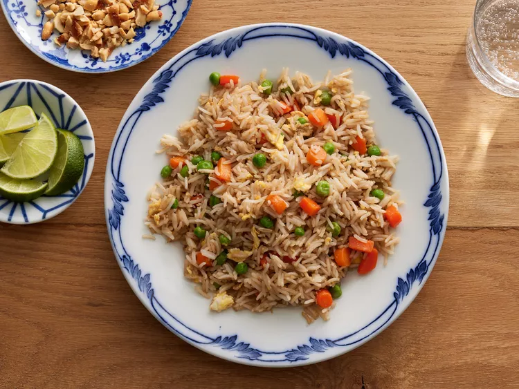

Fried Rice
Homepage

Photo: Fried Rice
Description: Fried rice is the ultimate family-friendly dish that yields maximum flavor without fuss. Loaded with tender sauteed veggies and delicious bits of scrambled egg, this top-rated recipe makes it easy to recreate a takeout favorite from home in just 20 minutes.
Ingredients
2/3 cup chopped baby carrots
1/2 cup frozen green peas
2 tablespoons vegatable oil
1 clover garlic, minced, or to taste(optional)
2 large eggs
3 cups leftover cooked white rice
1 tablespoon soy sauce, or more to taste
2 teaspoons sesame oil, or to taste
Steps
- Assemble Ingredients
- Place carrots in a small saucepan and cover with water. Bring to a low boil and cook for 3 to 5 minutes. Stir in peas, then immediately drain in a colander.
- Heat a wok over high heat. Pour in vegetable oil, then stir in carrots, peas, and garlic; cook for about 30 seconds. Add eggs; stir quickly to scramble eggs with vegetables.
- Stir in cooked rice. Add soy sauce and toss rice to coat. Drizzle with sesame oil and toss again.
- Serve hot and enjoy!